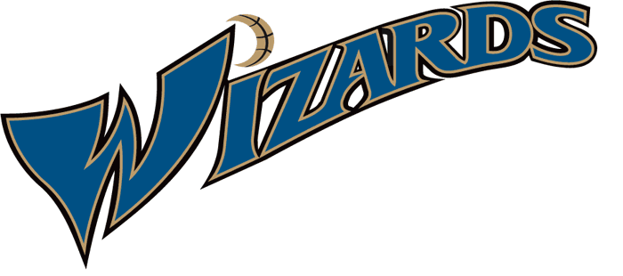
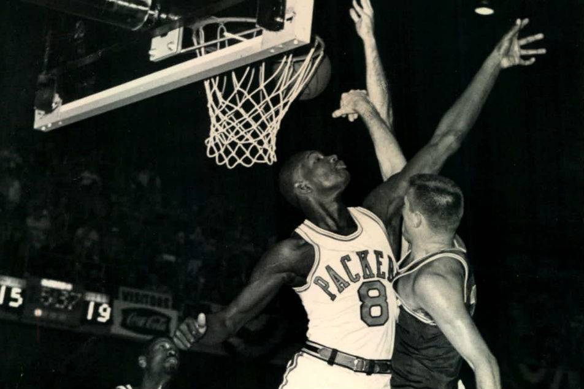
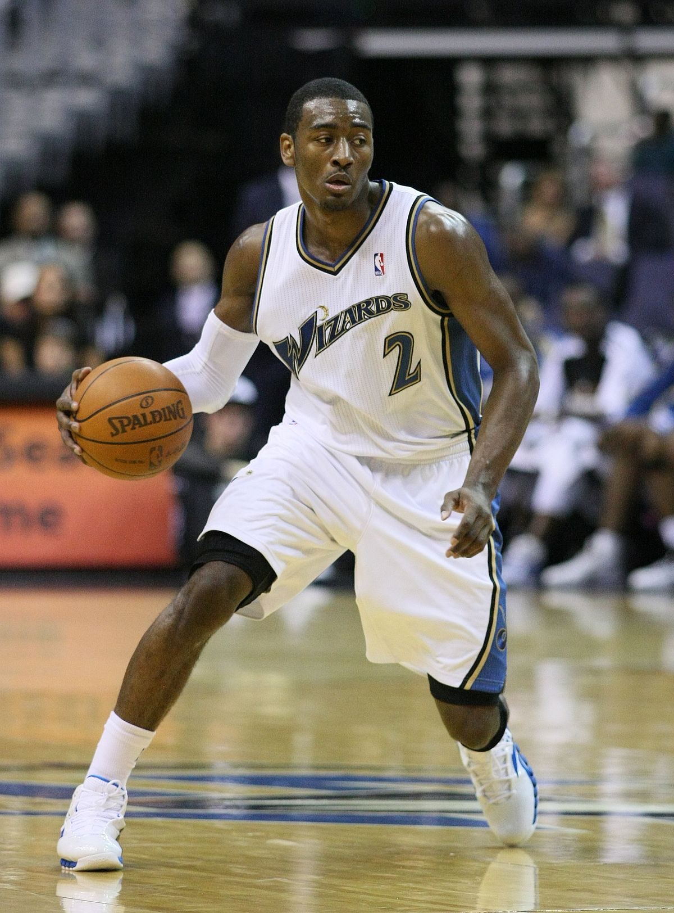

Washington Wizards
History


Washington Wizards, American professional basketball team based in Washington, D.C. The Wizards (then known as the Washington Bullets) made four trips to the National Basketball Association (NBA) finals in the 1970s and won an NBA championship in the 1977–78 season.
Founded in 1961 as the Chicago Packers, the team relocated to Baltimore, Maryland, in 1963 and became the Bullets. In 1973, after moving to Landover, Maryland, they played a season as the Capital Bullets, and in 1974 they became the Washington Bullets, a name they kept until 1995, when owner Abe Pollin renamed the team the Washington Wizards because of the violent overtones of the word bullet.
The Bullets reached the NBA play-offs for the first time in franchise history during the 1964–65 season, but it was not until the 1970s that future Hall of Fame players such as Earl Monroe, Gus Johnson, Wes Unseld, and Elvin Hayes made the Bullets yearly contenders for the NBA championship. The Bullets finished atop their division six times in that decade and qualified for the play-offs each year, winning their only NBA title in the 1977–78 season. The 1977–78 Bullets team finished the NBA regular season with an unimpressive record of 44 wins and 38 losses, but they had a string of three consecutive play-off series upsets to capture Washington’s first professional sports championship in 36 years.
The Bullets teams of the following decades were less successful, though they routinely made the play-offs through the mid-1980s with teams variously featuring guard Jeff Malone, centre Moses Malone, and forward Bernard King. From the 1988–89 season to the 2003–04 season, however, Washington qualified for the postseason only once.
In 2000 retired NBA superstar Michael Jordan became minority owner and the president of basketball operations of the team. He came out of retirement to play for the Wizards the following year, but he was relatively ineffective in his return to the court and retired permanently in 2003. Soon thereafter, citing poor management decisions by Jordan, Pollin shocked fans and commentators by choosing not to retain the best-known player in basketball history as team president. The Wizards returned to the postseason in the mid-decade, led by the play of All-Stars Gilbert Arenas, Antawn Jamison, and Caron Butler, but fell back to the lower echelons of the league in the 2008–09 season and traded most of their star players over the following years.
Behind the play of outstanding young point guard John Wall, the Wizards made it back to the play-offs in the 2013–14 season. In 2016–17 Wall led the Wizards to the team’s first division title in 38 years, and their season ended with a hard-fought seven-game series loss in the conference semifinals.
